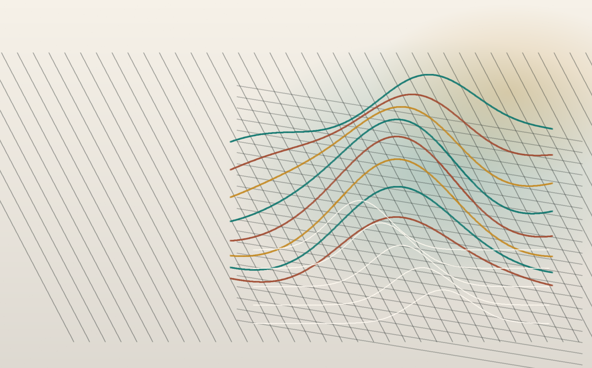

01
Pricing model
Motor claims frequency with GLM diagnostics
Build a transparent rating model, test exposure treatment, compare Poisson and negative binomial assumptions, and explain rating-factor movement.

Insurance analytics / risk modelling / reserving
A focused portfolio for pricing, claims analysis, reserving, and forecasting projects that can stand behind a CV.
Portfolio thesis
The site is structured around actuarial decision-making: what was uncertain, how the data was prepared, which model was appropriate, and how the result would change a pricing, reserving, or risk decision.
Selected work
Pricing model
Build a transparent rating model, test exposure treatment, compare Poisson and negative binomial assumptions, and explain rating-factor movement.
Reserving
Estimate ultimate losses with chain ladder, inspect development stability, and present reserve risk as a decision range rather than one point estimate.
Forecasting
Segment retention patterns, identify lapse drivers, and translate predictions into underwriting and customer-value actions.
Capabilities
Translate insurance questions into suitable assumptions, diagnostics, and decision-ready outputs.
Use statistical models, reproducible code, and sensitivity testing rather than isolated notebooks.
Explain model limitations, uncertainty, and commercial relevance in language a hiring team can scan.
Profile
This section can hold your education, actuarial exams, insurance interests, and a short CV-style summary. Keep it factual and connect every claim to a project wherever possible.